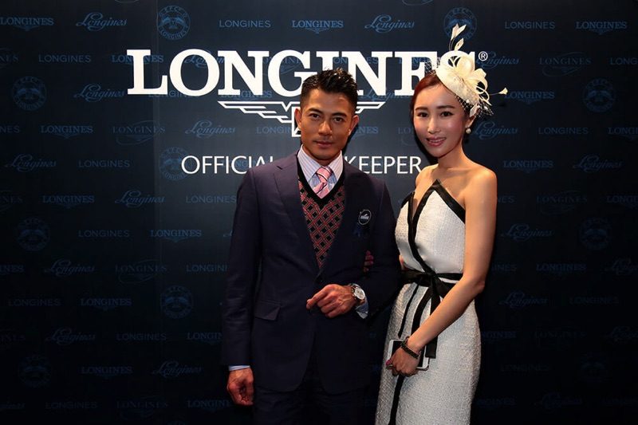
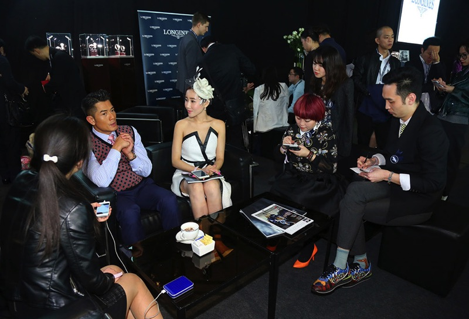
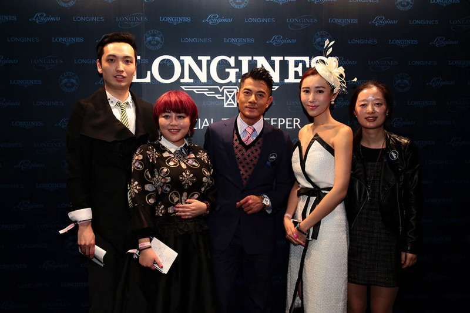

天王谈优雅
来香港参加浪琴表香港马术大师赛，有幸采访了浪琴表代言人郭富城，亲和幽默的男神与在座的媒体朋友们交谈甚欢，天王动静皆宜的优雅气质，与对马术的热情、感觉、感情跟浪琴表的三大元素甚是一致。
 Q：能介绍下您戴的这款表吗？为什么要佩戴这款？
A：这是全新康铂系列月相腕表，这款有星象功能在里面，可以计算出初一和十五。佩戴它因为是2015年最新款的，白色表盘很优雅，配上金色，无论是白天晚上，各个场合都彰显了品味。你可以正式场合，也可以casual wear，去旅行也可以戴。我在不同的场合里佩戴，无论隆重还是生活，希望别人认识到我生活中的点点滴滴，都是优雅，有品味，有品质的保证，这是一种分享。
Q：和浪琴的合作中，有没有哪些印象深刻的事情？
A：每次出席浪琴活动都印象深刻，尤其是马赛，因为我觉得我也像一匹马一样，出赛的时候是勇往直前，有力量的，也是很有灵性的，马就很像自己，它也很帅的。
Q：2014年的总结，和2015年的计划？
A：2014年很开心，拍了很多喜欢的电影，比如和陈凯歌导演合作了《道士下山》，虽然第一次合作，但是他是和我思想很靠近的一个导演，他对完美的追求，是我想去学习的，与他合作，让我对电影的感觉有了一点点改变，对我有一些启发。还拍了一部《踏血寻梅》，是我蛮喜欢的，超越自己的演技，到现在我拍《三打白骨精》，2014年在电影方面有重大的挑战。孙悟空是我梦寐以求的角色，很适合我自己，他有很多变化，有很多肢体语言，能演到他是缘分吧，所以2014年很开心满意。另外一方面，在音乐上的时间相对来说减少了一些，很开心在英国开了演唱会，是第一次在英国开演唱会。唯一的遗憾就是没有去赛车，因为工作太忙了，还要默默去做一些慈善的工作，总得来说2014年在工作上还是那么勇往直前。2015年的计划，会做国内的巡回演唱会，继续拍一些电影，希望有一天能成为汽车品牌的代言人，我喜欢赛车，可以展现展现我的技术。
Q：作为浪琴代言人10年了，觉得这个品牌有什么不一样，有什么独特的感情？
A：我和浪琴同步发展，同步得往前走。以往的浪琴表给人的印象是优雅，古典，感觉像是你戴着他就要穿的很正式，但是在我当代言人的过程中，浪琴慢慢开始有了master collection名匠系列，也有运动系列出来。我一直很喜欢运动，喜欢在舞台上跳舞，喜欢马术，这些不断挖掘出浪琴表对运动的支持，不单只是优雅，还把运动中的正能量释放出来，受到更多朋友的热爱，而且也不失他的分量，也能顾及到所有的消费者，让大家有冲动去拥有一块浪琴表。随着年龄的增长，对品味的要去在不断提高，每一个系列看到的都是经过精心设计，我希望品牌能透过我传达给消费者们。我妈妈有两只浪琴表，每次陪她吃饭的时候，她就会戴出来，我觉得很温馨。
Q：如果让您设计浪琴表，您会把什么样的元素放在手表里？
A：其实浪琴表基本上各类款式都有，很全面，如果让我设计的话，我详设计一些限量款，有我的理念在里面，比如可以有我喜欢的赛车，赛马，音乐，舞蹈的元素在里面，也是蛮有意思的，在优雅当中看到音乐和电影的元素。
Q：2015年有什么出行计划？比如春节打算去哪里？
A：没有，拍西游记太辛苦了，希望能够尽量争取时间休息。春节只有几天，但也要去拍戏。认识我的人都知道过去的10年里我很努力，我是个不喜欢原地踏步的人，不喜欢重复自己的人，那么我希望去挑一些我没演过的角色去尝试。以前我演过牛魔王，今年我演美猴王，孙悟空目前为止我演过最辛苦的角色，化妆要5-7个小时，他的动作很多，比过往的打戏都要多，到时候大家看到就知道了。
Q：做哪些运动来保持身材？
A：做有氧运动，提高新陈代谢，我除了平时运动，还要大量的演出，跳舞，虽然辛苦，但是也赚到了，身体好人看起来也很精神。最近没怎么去健身房，每天拍电影就跟去了10次健身房一样。
Q：给粉丝的祝福？
A：羊年我祝大家生活愉快，快乐就会健康嘛，身体健康，勇往直前，心想事成！